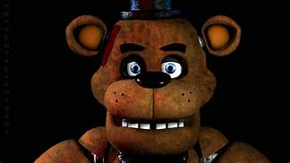
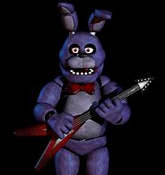
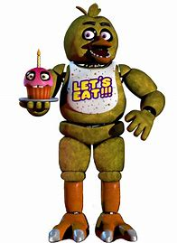
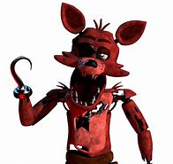

Freddy

Freddy Fazbear, the titular character of Five Nights at Freddy's 1, is a central animatronic in the haunted pizzeria. He is a large, anthropomorphic brown bear with a friendly and approachable appearance. During the day, he performs on stage, entertaining children with his singing and dancing.
However, Freddy's benign daytime persona takes a sinister turn at night. In the game, he becomes the primary antagonist, actively hunting the night security guard. Freddy's movements are slow and methodical, making him a formidable adversary. He often hides in the shadows and frequently appears on security cameras, growing closer to the player's office as the nights progress.
Freddy has a distinctive laugh and a haunting jingle that signals his approach, adding to the tension and fear as players attempt to keep him at bay by using limited power to close security doors. He is known for delivering one of the most terrifying jump scares in the game if he successfully breaches the office.
The lore suggests that Freddy Fazbear may be possessed by the spirit of a murdered child, explaining his malevolent behavior during the night shifts. Freddy Fazbear is an iconic character in the FNaF series and plays a pivotal role in establishing the franchise's horror-filled atmosphere.
Bonnie

Bonnie the Bunny is one of the animatronic characters featured in Five Nights at Freddy's 1. Bonnie is a prominent figure at Freddy Fazbear's Pizza, performing alongside Freddy Fazbear and Chica the Chicken during the day to entertain children.
Bonnie is known for its bluish-purple fur and a bowtie, giving it a somewhat friendly appearance during daylight hours. However, as night falls and the player takes on the role of the night security guard, Bonnie's demeanor changes drastically. Bonnie becomes increasingly aggressive and unpredictable, actively seeking out the player.
Bonnie is known for his tendency to approach the security guard's office from the left side of the building, often appearing suddenly in the office doorway. This startling behavior makes him one of the primary sources of jump scares in the game.
Much like the other animatronics in the game, there is a suggestion in the lore that Bonnie might be possessed by the spirit of a child who met a tragic end at the pizzeria. This malevolent presence drives Bonnie's relentless pursuit of the night guard, contributing to the eerie and unsettling atmosphere of Five Nights at Freddy's 1.
Chica

Chica the Chicken is another of the animatronic characters featured in Five Nights at Freddy's 1. Chica, like Bonnie and Freddy, is a regular performer at Freddy Fazbear's Pizza, entertaining children during the daytime.
Chica is characterized by her bright yellow feathers and a bib adorned with the words "Let's Eat!" She carries a cupcake in one hand, adding a touch of whimsy to her appearance. In the daylight hours, Chica is meant to be a friendly and endearing figure.
However, once night descends and the player becomes the night security guard, Chica takes on a much more menacing role. She becomes increasingly active and determined to reach the security guard in the office. Chica is known for her tendency to approach the player from the right side of the establishment.
Her movements and sudden appearances at the office door contribute to the game's jump scare moments, keeping players on edge as they struggle to survive each night. In the game's lore, it is hinted that Chica may also be possessed by the spirit of a child, adding to the eerie and unsettling nature of her behavior during the night shifts. Chica is an integral part of the Five Nights at Freddy's 1 experience, adding to the overall suspense and horror of the game.
Foxy

Foxy the Pirate is one of the animatronic characters in Five Nights at Freddy's 1, and he stands out as one of the most distinctive and feared figures in the game.
Foxy is an animatronic fox with crimson fur and a tattered, hook-like hand. He's a sharp departure from the more kid-friendly appearance of the other animatronics. During the daytime, Foxy is less active and usually remains out of sight in his pirate-themed cove, only entertaining children sporadically.
At night, Foxy becomes a major threat. Unlike Freddy, Bonnie, and Chica, Foxy doesn't stay on the stage but instead resides in Pirate Cove, a curtain-draped area. Foxy is known for his unique behavior of sprinting down the hall toward the security guard's office if he's not monitored closely enough. This makes him particularly difficult to manage, as players must frequently check on him to prevent his aggressive approach.
Foxy's jump scare is especially terrifying, and players need to react quickly to his impending attack. In the game's lore, Foxy's behavior is attributed to possible malfunction or tampering, which adds to the overall sense of dread and the feeling that something is seriously amiss at Freddy Fazbear's Pizza. Foxy's menacing presence is a key element of the horror experience in Five Nights at Freddy's 1.